Frequency response
In the previous section we singled out the LTI systems: those that are both linear and time-invariant. That class is worth singling out because of what it does to a single frequency. An LTI system cannot create a frequency that was not in its input, and it cannot destroy one except by scaling it to zero. All it can do to a complex exponential is scale it and shift it in time. Collecting those scalings and shifts, one for each frequency, gives a complete description of the system: its frequency response.
The response to a single frequency
Let us feed the same input, the complex exponential $x(t) = e^{i2\pi t}$, to each of the systems we examined in the previous section, and watch the output. In each pair of animations the input is on the left and the output on the right, and both are drawn on the same clock, slowed to a quarter speed, so you can compare how fast they turn.
The lengths differ a good deal between systems, so the frames are not all drawn at the same number of pixels per unit. In every frame the dashed circle is the input’s length, and the arrow is drawn against it, so the arrow’s size relative to that circle is the true ratio wherever you look. The differentiator, for instance, gives an output more than six times the input, and its dashed circle is correspondingly small.
$y(t) = \frac{1}{2}x\left(t - \frac16\right)$ — a delay and a halving:
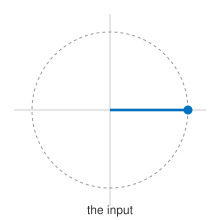
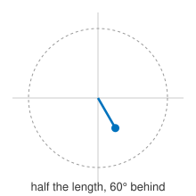
$y(t) = x(3t)$ — a time compression:
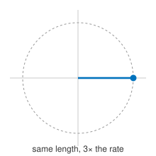
$y(t) = \frac{dx(t)}{dt}$ — a differentiator:
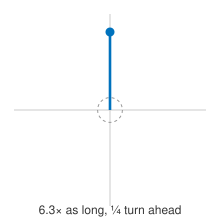
$y(t) = \frac{1}{2\pi}\frac{dx(t)}{dt} - \frac{1}{(2\pi)^2}\frac{d^{2}x(t)}{dt^{2}}$:
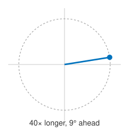
$y(t) = x(t)^{2} - x(t/2)$:
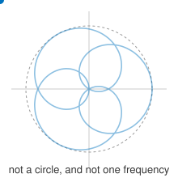
Complex exponentials pass through LTI systems unchanged
The pattern in those animations is not a coincidence. It is forced by linearity and time invariance together.
If $T$ is an LTI system and the input is $x(t) = e^{i2\pi ft}$, then the output is $$y(t) = H(f)\, e^{i2\pi ft}$$ for some complex number $H(f)$ that depends on the system and on $f$, but not on $t$.
Here is why. Write $y(t) = T(x)(t)$ for the output. Delaying the input by $\tau$ gives, by time invariance,
\[T\big(x(t-\tau)\big) = y(t-\tau).\]But a complex exponential that is delayed is the same exponential multiplied by a constant:
\[x(t-\tau) = e^{i2\pi f(t-\tau)} = e^{-i2\pi f\tau}\, e^{i2\pi ft} = e^{-i2\pi f\tau}\, x(t),\]and $e^{-i2\pi f\tau}$ does not depend on $t$, so it is just a scalar. Linearity lets us pull it out:
\[T\big(x(t-\tau)\big) = e^{-i2\pi f\tau}\, T\big(x(t)\big) = e^{-i2\pi f\tau}\, y(t).\]Comparing the two expressions, $y(t-\tau) = e^{-i2\pi f\tau} y(t)$ for every $t$ and every $\tau$. Setting $t = 0$ and renaming $-\tau$ as $t$ gives $y(t) = y(0)\, e^{i2\pi ft}$. So the output is the input times the constant $y(0)$, and we call that constant $H(f)$.
This is what makes the frequency domain the natural place to describe an LTI system. In the time domain a filter mixes each output value out of many input values. In the frequency domain it does nothing but multiply, one frequency at a time.
The frequency response
The frequency response of an LTI system is the function $H(f)$ that gives, for each frequency $f$, the complex number by which the system scales $e^{i2\pi ft}$. Writing $H(f) = A_f e^{i\phi_f}$ with $A_f \geq 0$:
- $A_f = \vert H(f)\vert$ is the magnitude response: how much the system amplifies or attenuates frequency $f$;
- $\phi_f = \angle H(f)$ is the phase response: how much it shifts frequency $f$.
Because any signal is a combination of complex exponentials, and because the system is linear, we can process those exponentials one at a time and add up the results. If the input has spectrum $X(f)$ and the output has spectrum $Y(f)$, then
\[Y(f) = H(f)\, X(f).\]In the time domain the picture is less tidy. A sinusoid comes out scaled and shifted, still a sinusoid at the same frequency. A signal that is not a single sinusoid comes out with its shape changed, because the system may treat its different frequency components differently.
A sinusoid in, a sinusoid out — same frequency, different amplitude and phase:
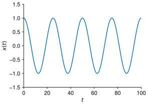
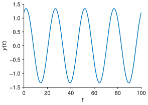
A square wave in, and the shape does not survive. The square wave is a sum of many harmonics, the system treats them differently, and what comes out is a different shape at the same period:
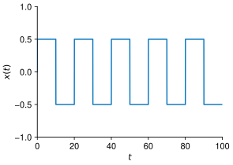
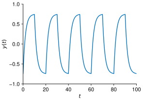
Finding $H(f)$
To find the frequency response of a system, feed it $e^{i2\pi ft}$ and read off the factor that multiplies $e^{i2\pi ft}$ in the output. Let us do this for the systems above.
A delay and a scaling, $y(t) = \frac{1}{2}x\left(t-\frac16\right)$:
\[x(t) = e^{i2\pi ft} \;\longrightarrow\; y(t) = \tfrac12 e^{i2\pi f\left(t-\frac16\right)} = \underbrace{\tfrac12 e^{-i2\pi f/6}}_{H(f)}\, e^{i2\pi ft}.\]So $H(f) = \frac12 e^{-i2\pi f/6}$. Its magnitude $\vert H(f)\vert = \frac12$ is the same at every frequency, and its phase $-2\pi f/6$ is a straight line through the origin. That combination — flat magnitude, phase proportional to $f$ — is the signature of a pure delay: every frequency is held back by the same $\frac16$ second, so the shape of the signal survives intact.
A time compression, $y(t) = x(3t)$:
\[x(t) = e^{i2\pi ft} \;\longrightarrow\; y(t) = e^{i2\pi f(3t)} = e^{i2\pi (3f)t}.\]The output is a complex exponential at frequency $3f$, not $f$. No constant $H(f)$ can describe this, and indeed the system is not time-invariant, so it has no frequency response.
A differentiator, $y(t) = \frac{dx(t)}{dt}$:
\[x(t) = e^{i2\pi ft} \;\longrightarrow\; y(t) = i2\pi f\, e^{i2\pi ft}, \qquad H(f) = i2\pi f.\]Here $\vert H(f)\vert = 2\pi\vert f\vert$: the differentiator amplifies high frequencies and suppresses low ones, which is why differentiating a noisy measurement makes the noise worse. Since $i = e^{i\pi/2}$, the phase is $+\pi/2$ for $f > 0$ and $-\pi/2$ for $f < 0$ — a quarter-cycle advance.
A combination, $y(t) = \frac{1}{2\pi}\frac{dx(t)}{dt} - \frac{1}{(2\pi)^2}\frac{d^{2}x(t)}{dt^{2}}$. Each derivative contributes its own factor, and linearity lets us add them:
\[H(f) = \frac{1}{2\pi}(i2\pi f) - \frac{1}{(2\pi)^2}(i2\pi f)^2 = if + f^{2}.\]Real systems have conjugate-symmetric frequency responses
Real-valued signals have conjugate-symmetric spectra, $X(f) = X^{*}(-f)$. A system built out of real components obeys the same symmetry:
\[H(f) = H^{*}(-f).\]In words: the magnitude response is even, $\vert H(-f)\vert = \vert H(f)\vert$, and the phase response is odd, $\angle H(-f) = -\angle H(f)$. This is what guarantees that a real input to a real filter produces a real output, whose spectrum is again conjugate symmetric:
\[Y(f) = Y^{*}(-f).\]It also means that plotting $\vert H(f)\vert$ for $f \geq 0$ tells the whole story; the negative frequencies are determined by the positive ones.
Combining systems
Two facts follow immediately from $Y(f) = H(f)X(f)$, and they are the reason engineers design filters in the frequency domain.
If a signal passes through one LTI system and then another, the frequency responses multiply: putting $H_1$ before $H_2$ gives an overall response $H_2(f)H_1(f)$, since each frequency is scaled once and then again. If instead the signal is sent through both systems and the outputs are added, the responses add, giving $H_1(f) + H_2(f)$. The graphic equalizer at the end of this section is built exactly this way.
Frequency-selective filters
The most common thing to ask of a filter is that it keep some frequencies and throw away the rest. A frequency-selective filter is an LTI system whose magnitude response is close to $1$ on a range of frequencies, called the passband, and close to $0$ elsewhere, called the stopband.
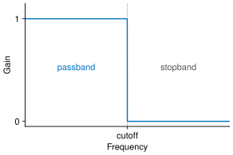
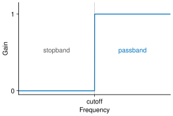
The four standard shapes are named for the part of the spectrum they keep:
- a low-pass filter keeps frequencies below a cutoff and removes those above;
- a high-pass filter keeps frequencies above a cutoff;
- a band-pass filter keeps a band between two cutoffs;
- a band-stop filter removes a band and keeps everything else.
These are especially useful when the signal we want occupies a limited set of frequencies and the signal we do not want occupies a different set. Recall from the sampling section that a bandlimited signal has all of its frequency content in $[-B, B]$; a low-pass filter with cutoff $B$ is what enforces that, and it is the reason a signal can be sampled at all.
Filtering a sum of tones
Consider a three-tone signal built from $250$, $500$ and $1000$ Hz in equal parts:
\[x(t) = \tfrac13\left(\cos(2\pi (250)t) + \cos(2\pi (500)t) + \cos(2\pi (1000)t)\right).\]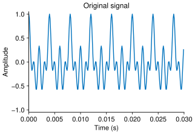
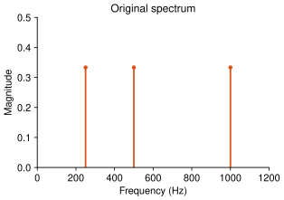
All three tones together:
Its spectrum has energy at exactly three frequencies (and their negatives). Because the filter multiplies the spectrum frequency by frequency, we can read off the result by inspection.
Pass it through a low-pass filter with a $400$ Hz cutoff. Only the $250$ Hz tone lies in the passband, so only that tone survives:
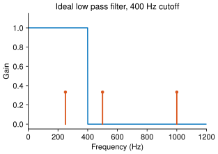
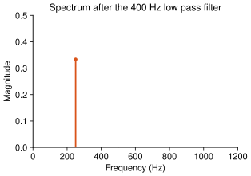
In the time domain, before and after:
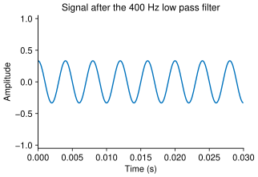
Only the 250 Hz tone is left, and it sounds it:
A high-pass filter with a $600$ Hz cutoff does the opposite, keeping only the $1000$ Hz tone:
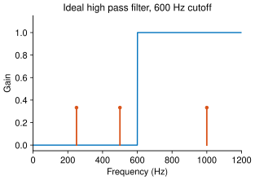
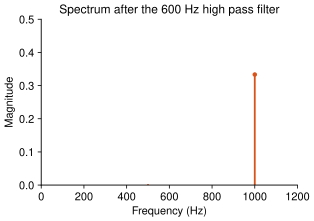
In the time domain, before and after:
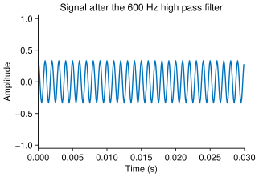
Only the 1000 Hz tone is left:
Filtering a sawtooth wave
Tones are the easy case because their spectra are single points. A more interesting example is a sawtooth wave, which is built from a whole family of harmonics with amplitudes that fall off like $1/k$:
\[x(t) = 1 + \sum_{k=1}^{\infty} \frac{2}{k\pi}\cos\left(2\pi (5k)t + \frac{\pi}{2}\right).\]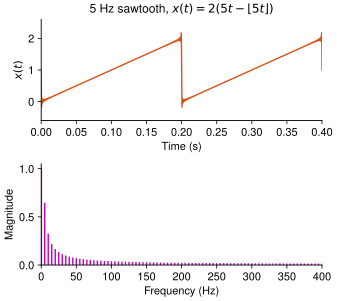
A $5$ Hz sawtooth is far too low to hear, so this is the same shape at an audible pitch, $220$ Hz, with every harmonic present:
Low-pass filtering above the tenth harmonic (that is, at $50$ Hz) keeps the first ten terms of the sum and discards the rest. The result is still recognisably a sawtooth, but its corners are rounded, because the sharp corner is exactly what the removed high harmonics were building:
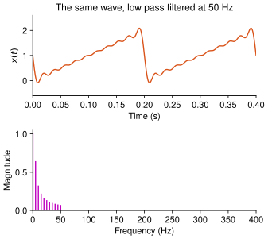
And the same wave with everything above the tenth harmonic removed. The pitch is unchanged, because the fundamental is untouched; what goes is the brightness, which is what the high harmonics were providing:
The graphic equalizer

We can now say exactly what the equalizer from the beginning of the previous section does. Each frequency along the horizontal axis labels a band, which is the passband of one band-pass filter. The equalizer feeds the sound into all of the filters at once and adds their outputs, so the overall frequency response is the sum of the individual responses — one slider’s worth of gain in each band.
The sliders are marked in decibels. The decibel is a logarithmic measure of gain: a factor $A$ in magnitude is
\[20\log_{10} A \ \text{ dB}.\]A slider at $0$ dB is a gain of $1$ and leaves that band alone; above $0$ dB is amplification and below $0$ dB is attenuation. The scale is logarithmic because loudness is perceived roughly logarithmically, so equal steps on the slider sound like equal steps to the ear.